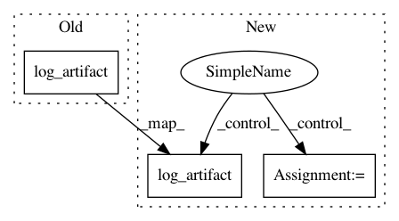

3866d7dc073ae983c7390bc5b1e604fea4360217,core/tests/test_tracking/test_run_tracking.py,TestRunLogging,test_log_artifacts,#TestRunLogging#,1068
Before Change
)
tsv_file = tempfile.mkdtemp() + "/file.tsv"
self.touch(tsv_file)
self.run.log_artifact(
name="file", path=tsv_file, artifact_kind=V1ArtifactKind.TSV
)
pd_file = tempfile.mkdtemp() + "/dataframe"
self.touch(pd_file)
self.run.log_artifact(
name="file2", path=pd_file, artifact_kind=V1ArtifactKind.DATAFRAME
After Change
tsv_file = tempfile.mkdtemp() + "/file.tsv"
self.touch(tsv_file)
with patch("polyaxon.tracking.run.Run._log_dashboard") as log_dashboard:
self.run.log_artifact(
name="file", path=tsv_file, artifact_kind=V1ArtifactKind.TSV
)
assert log_dashboard.call_count == 1
pd_file = tempfile.mkdtemp() + "/dataframe"
self.touch(pd_file)
with patch("polyaxon.tracking.run.Run._log_dashboard") as log_dashboard:
In pattern: SUPERPATTERN
Frequency: 3
Non-data size: 3
Instances
Project Name: polyaxon/polyaxon
Commit Name: 3866d7dc073ae983c7390bc5b1e604fea4360217
Time: 2020-04-24
Author: mouradmourafiq@gmail.com
File Name: core/tests/test_tracking/test_run_tracking.py
Class Name: TestRunLogging
Method Name: test_log_artifacts
Project Name: polyaxon/polyaxon
Commit Name: 3866d7dc073ae983c7390bc5b1e604fea4360217
Time: 2020-04-24
Author: mouradmourafiq@gmail.com
File Name: core/tests/test_tracking/test_run_tracking.py
Class Name: TestRunLogging
Method Name: test_log_artifact
Project Name: mlflow/mlflow
Commit Name: 80099417284f9c7377eb8af58b2845291abdea62
Time: 2019-08-09
Author: 51172624+apurva-koti@users.noreply.github.com
File Name: mlflow/tracking/client.py
Class Name: MlflowClient
Method Name: log_artifact